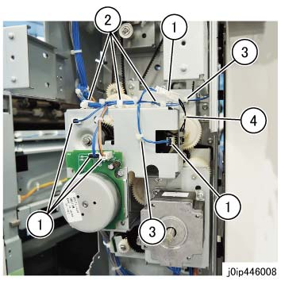
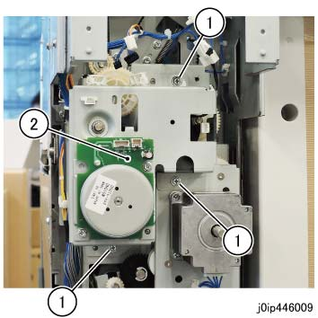
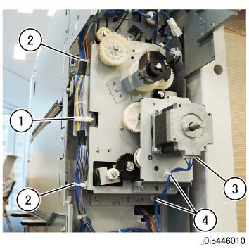
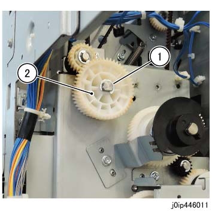
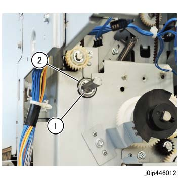
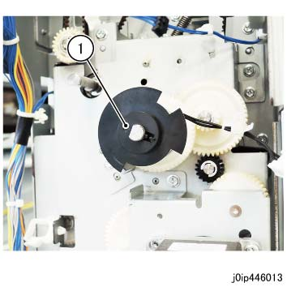
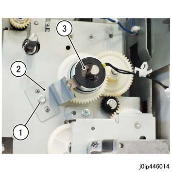
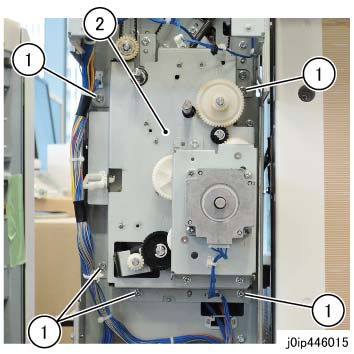

REP 46.3.1 IP Trans 电机 单元 
参考 PL:PL 46.3
Removal

在...之后 turning 关闭/脱离 电源开关, 确认 the screen 显示 进入 关闭/脱离 和 the [电源 Saver] button 停止 blinking. 然后, 关闭 the 主 电源 开关, 确认 the [主 电源] 灯 具有 turned 关闭/脱离, 和 然后 关闭 the Breaker 和 unplug 电源插头.

静电可能损坏电气部件. 静电可能损坏电气部件. 维修时请始终佩戴腕带. If a wrist 条带 不是 可用的, touch 一些 metallic parts 在...之前 servicing to discharge the static electricity.
拆卸 纸张 输出 选件 在...之后 the Interposer 单元.
拆卸 后面 上方 盖板. (PL 46.2)
安装 螺钉: x4 在后面
断开连接器 (x5), 和 释放 线束. (图 1)
断开连接器 (x5).
释放 线束 从 卡箍 (x3).
释放 卡箍 (x2) 的 线束.
释放 卡箍 的 线束.

(图 1) ip446008
拆卸 IP Trans TA 电机组件. (图 2)
拆卸螺钉 (x3: round).
拆卸 IP Trans TA 电机组件.

(图 2) ip446009
断开连接器 和 释放 线束. (图 3)
释放 线束 从 卡箍.
拆卸 线束 卡箍 (x2).
断开连接器.
拆卸 线束 卡箍 (x2).

(图 3) ip446010
拆卸齿轮 (Z40 Z50). (图 4)
拆卸E型卡环.
拆卸齿轮 (Z40 Z50).

(图 4) ip446011
拆卸 Ball Bearing. (图 5)
拆卸E型卡环.
拆卸 Ball Bearing.

(图 5) ip446012
断开 tab, 和 拆卸 Cam 执行器. (图 6)
断开 tab, 和 拆卸 Cam 执行器.

(图 6) ip446013
断开 tab, 和 拆卸 Interposer Declarer Cam 离合器. (图 7)
拆卸螺钉 (round).
拆卸支架.
断开 tab, 和 拆卸 Interposer Declarer Cam 离合器.

(图 7) ip446014
拆卸 IP Trans 电机 单元. (图 8)
拆卸螺钉 (x5: round).
拆卸 IP Trans 电机 单元.

(图 8) ip446015
安装
安装时 the IP Trans 电机 单元, temporarily 固定 螺钉 (x5: round), 安装 Ball Bearing removed in Removal 步骤 7, 和 然后 securely 拧紧 it.